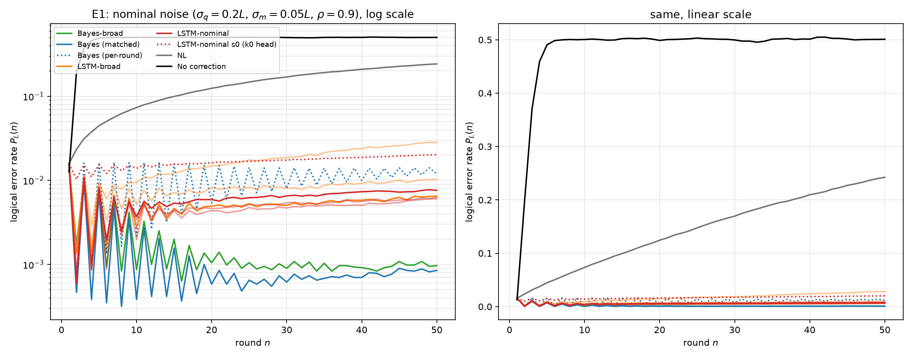
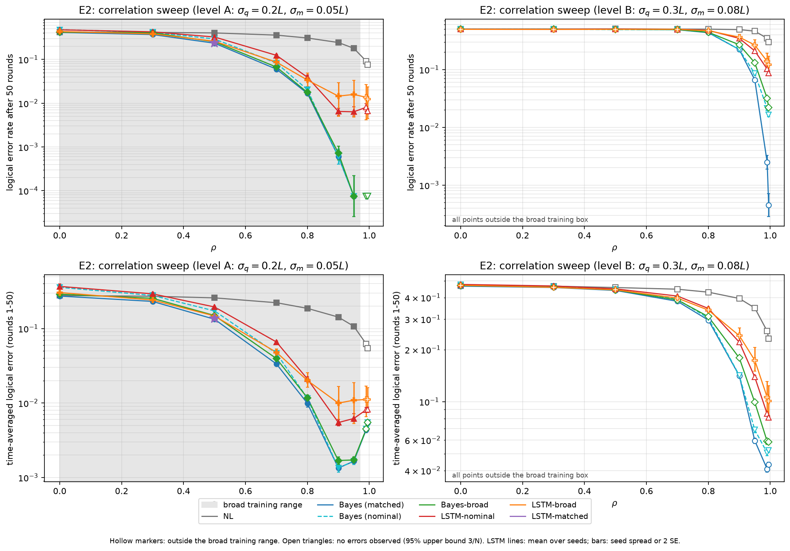
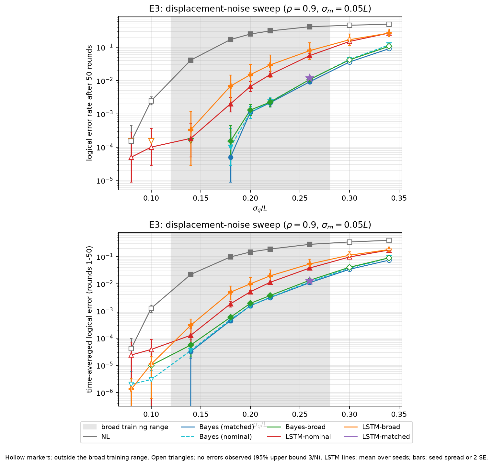
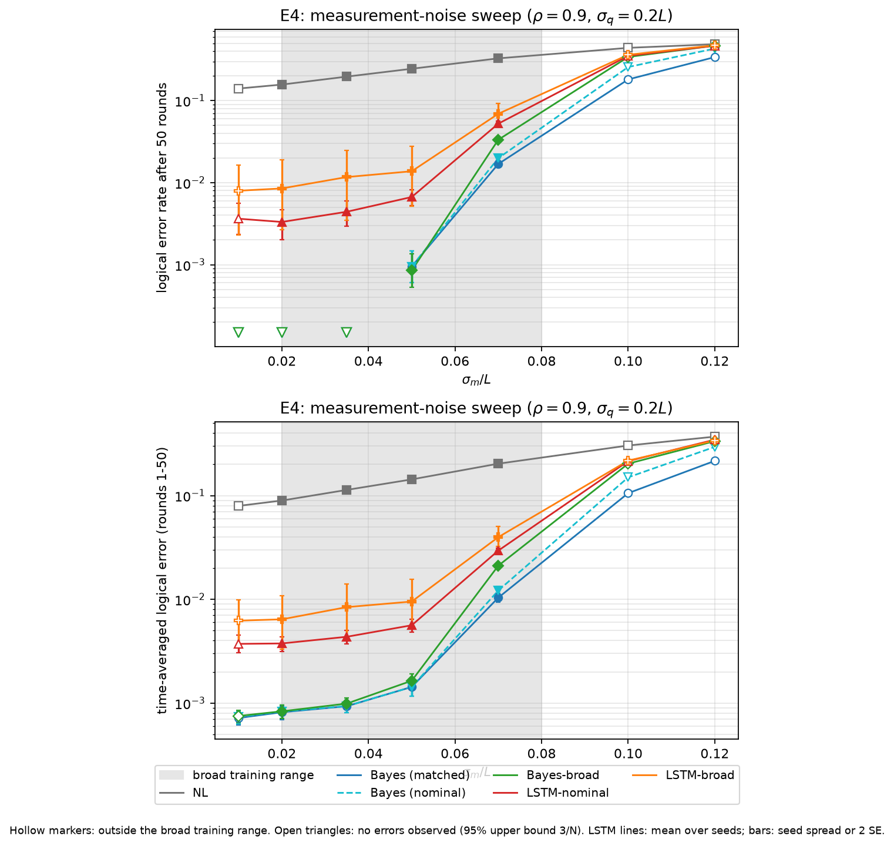
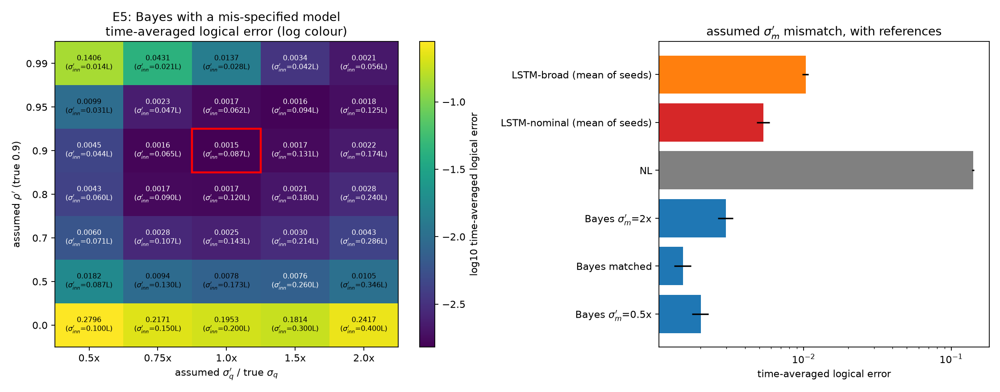
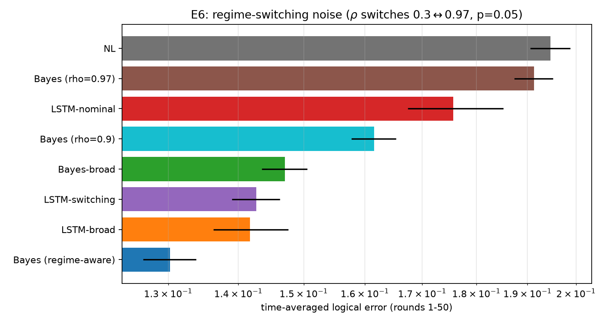
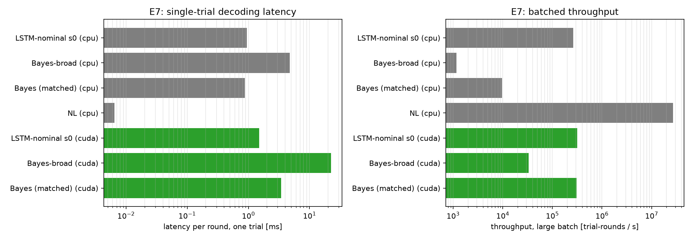
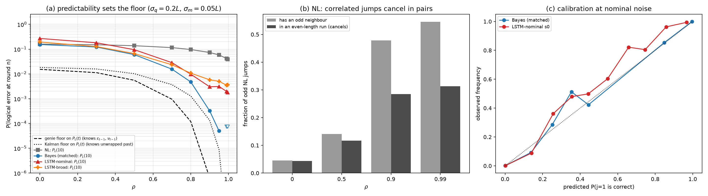
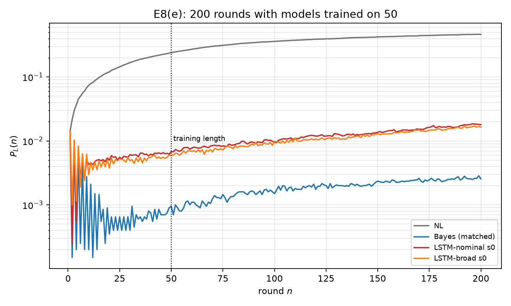
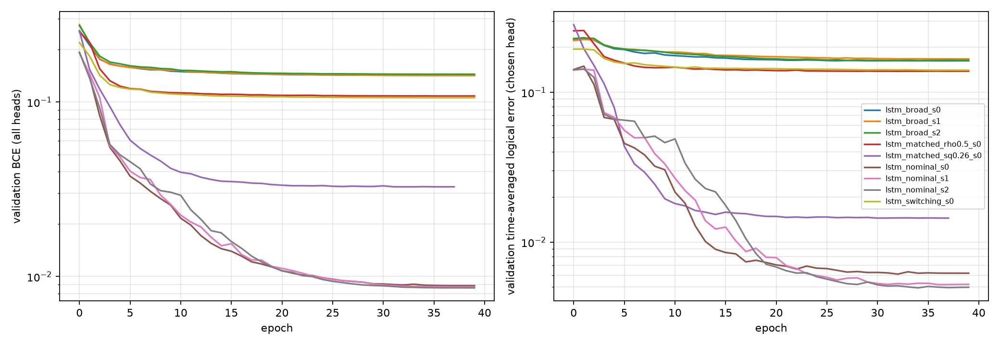

GKP decoder comparison under correlated displacement noise
Nearest lattice vs a sequential Bayesian filter vs an LSTM, for the square GKP code in the q quadrature, with AR(1)-correlated displacements and Gaussian measurement noise. This page summarises the full run for review; the 20-page LaTeX report has every detail.
The answer to the proposal's question
- Memory helps a lot under correlated noise: at the nominal point the Bayesian filter's time-averaged logical error is 95× lower than nearest lattice's.
- With the correct noise model the Bayesian filter is best at every test point, and a moderately wrong model usually still beats the LSTM.
- Machine learning wins where the Bayesian model is structurally wrong: under regime-switching noise the broadly trained LSTM beats every fixed-model filter.
- Wrong memory is worse than none: decoders tuned for ρ = 0.9 do worse than nearest lattice when the noise is uncorrelated.
The nominal point
σq = 0.2L, σm = 0.05L, ρ = 0.9, L = √π. 60,000 trials of 50 rounds; every decoder sees the same noise. PL(n) is the fraction of trials in a logical error after round n; the time-averaged error averages PL over rounds 1–50.
| Decoder | PL(10) | PL(50) | Time-averaged error | vs Bayes | Time-averaged error, log scale 10−4…1 |
|---|---|---|---|---|---|
| No correction | 0.501 | 0.501 | 0.481 | 319× | |
| Nearest lattice | 0.073 | 0.242 | 0.144 | 95.2× | |
| Bayes, correct model | 3.8 × 10-4 | 8.5 × 10-4 | 1.5 × 10-3 | — | |
| Bayes-broad (8-model average) | 8.7 × 10-4 | 9.7 × 10-4 | 1.9 × 10-3 | 1.24× | |
| Bayes, per-round only (ablation) | 2.2 × 10-3 | 0.012 | 0.011 | 7.07× | |
| LSTM trained here (mean of 3 seeds) | 3.0 × 10-3 | 6.6 × 10-3 | 5.5 × 10-3seeds 4.9 × 10-3–6.3 × 10-3 | 3.65× | |
| LSTM, per-round head (ablation) | 0.014 | 0.020 | 0.017 | 11.1× | |
| LSTM trained broadly (mean of 3 seeds) | 5.8 × 10-3 | 0.015 | 0.010seeds 5.4 × 10-3–0.017 | 6.78× |
"vs Bayes" divides each decoder's time-averaged error by the correct-model filter's. Seed ranges are the spread over the three trained LSTMs. Matched Bayes had 51 errors at round 50 in 60,000 trials.
Findings
The tag gives how firmly the data support each finding: robust holds across the sweeps and outside the error bars; qualified holds with stated exceptions.
-
Memory helps most at strong correlation
robustNearest lattice reaches PL(50) = 0.242 at the nominal point; the correct-model filter reaches 8.5 × 10-4. The gain grows with ρ up to about 0.9 and tracks how predictable the next displacement is, σq√(1−ρ²).
E1, E2, E8(a): nominal curves, ρ sweep, floors
-
Revising earlier corrections matters
robustThe best decoders track the running logical state and undo earlier mistakes when later syndromes reveal them. Versions that decide each round on its own are 2.7× worse (LSTM) and 7.1× worse (Bayes) in time-averaged error. Validation picked the cumulative head for all 9 LSTMs.
E1 ablations, table above
-
With the right model, Bayes wins everywhere
robustMatched LSTMs come within 2% (ρ = 0.5) and 17% (σq = 0.26L) of the filter where errors are common, but the LSTM trained at the nominal point is 3.7× worse there, where errors are rare. When the two disagree at the nominal point, Bayes is right 98% of the time.
E1, E2, E3, E8(c): σq sweep, calibration
-
Wrong memory is worse than no memory
robustWith uncorrelated noise (ρ = 0) nearest lattice has error 0.278; the filter assuming ρ = 0.9 has 0.357 and the LSTM trained at ρ = 0.9 has 0.368. In E5, a filter assuming ρ′ = 0 at a true ρ = 0.9 has 0.195, worse than nearest lattice (0.141).
E2, E5: mismatch heatmap
-
A moderately wrong model is usually still fine
qualifiedRaising the assumed σq to 2× costs little (2.2 × 10-3 against 1.5 × 10-3); lowering ρ′ to 0.5 costs 5× (7.8 × 10-3); an overconfident model collapses to nearest-lattice level (0.141). The exception to "Bayes stays ahead": at weak correlation (ρ = 0.3) the broad LSTM (0.241) beats the 8-model Bayes average (0.255).
E2, E5
-
ML helps when the Bayes model is structurally wrong
robustWhen ρ switches between 0.3 and 0.97, the broad LSTM (0.142) beats filters assuming a fixed ρ = 0.9 (0.162), ρ = 0.97 (0.191) and the model average (0.147); nearest lattice is at 0.195. Only a filter that models the switching does better (0.130). An LSTM trained on the switching noise itself (0.143) is no better than the broad one.
E6: switching
Correlation sweep, interactive
Time-averaged logical error against ρ (E2). Bars on the LSTM points show the spread over three seeds. Hollow points are outside the broad training box.
All figures
Click a figure to open it at full size.
E1 · Nominal point, error after each round
Logical error rate after each round at σq = 0.2L, σm = 0.05L, ρ = 0.9 (60,000 trials, same noise for every decoder).


What to look at The odd/even zig-zag in the first rounds is a frozen displacement sitting near a cell boundary; Bayes settles it within a few rounds, the per-round variants never do.
E2 · Correlation sweep
Top: PL(50). Bottom: time-averaged error. Level A (left) is the nominal noise strength, level B (right) is harder and outside the broad training box.


What to look at Bayes's gain over nearest lattice peaks near ρ = 0.9. At ρ = 0, both decoders tuned for ρ = 0.9 fall below nearest lattice.
E3 · Displacement-noise sweep
ρ = 0.9, σm = 0.05L, 20,000 trials per point.


What to look at The nominal-model filter (dashed) tracks the matched one across the whole range. The purple star is the LSTM trained at σq = 0.26L.
E4 · Measurement-noise sweep
ρ = 0.9, σq = 0.2L, 20,000 trials per point.


What to look at Above σm ≈ 0.07L every decoder degrades quickly and the filters' lead shrinks.
E5 · Bayes with a wrong model
Time-averaged error of filters that assume the wrong ρ′ and σq′, at the nominal truth (40,000 trials). The red box is the correct model.


What to look at Raising σq′ is cheap; lowering ρ′ or assuming too little innovation noise is expensive. ρ′ = 0 is worse than no memory.
E6 · Regime-switching noise
ρ switches between 0.3 and 0.97 with probability 0.05 per round.


What to look at The broadly trained LSTM beats every filter that assumes one fixed ρ; only the regime-aware filter does better.
E7 · Decoding cost
Per-round latency for one trial and batched throughput, on an idle NVIDIA GeForce RTX 5080 Laptop GPU and the CPU.


What to look at On the GPU the LSTM and the filter run at similar rates; batched on the CPU the LSTM is far faster.
E8 · Diagnostics
(a) PL(10) against two analytic floors. (b) Nearest-lattice jumps cluster as ρ grows. (c) Calibration at the nominal point.


What to look at Bayes approaches the Kalman floor at high ρ. The LSTM's probabilities are biased low; Bayes is close to calibrated.
E8 · 200 rounds
Models trained on 50-round sequences, run for 200 rounds at the nominal point.


What to look at No blow-up past the training length; errors keep accumulating slowly.
LSTM training curves
Validation loss and validation time-averaged error per epoch, all 9 models.


What to look at The three broad seeds converge to similar validation error, so their large spread at the nominal point is not undertraining.
Method in brief
Simulator
Each round: x ← x + εt, syndrome st = wrap(x + νt), correction ct, x ← x − ct. A logical error is round(x/L) odd. Classical shifts only, validated against closed forms and GKP 2001.
The key reduction
Every decoder plays ct = st + jtL with jt ∈ {0,1}. Then the syndromes do not depend on the decoder, and its logical state is the nearest-lattice state XOR the parity of its own j's.
Decoding means estimating a running parity. Comparisons are exactly paired, and LSTM labels never depend on the LSTM.
Bayesian grid filter
Belief over (cumulative displacement mod 2L, ε) on a 96×97 grid, updated by an AR(1) matrix, a shear, and the periodic syndrome likelihood; batched on the GPU. Variants: correct model, fixed nominal model, an 8-model average, regime-aware, and a per-round ablation. Grid-converged: decisions differ from a 192-point grid in at most 9.4e-04 of trial-rounds.
LSTM
2 layers × 128, inputs [s/L, sin, cos], five heads predicting window parities and the running parity. 200,000 training sequences, up to 40 epochs; the head is chosen on validation data. Trained at the nominal point (3 seeds), on a broad parameter box (3 seeds), at two matched points, and on switching noise.
Checks and audit trail
Before building
Four independent reviewers checked the plan, with skeptics verifying each finding. They caught that the first design let Bayes revise past decisions but not the LSTM, which would have handicapped the LSTM by design.
Before the main run
A code review compared the filter against an exact reference and found the maths correct. It found bookkeeping bugs (cache keys, seeding, timing on a shared GPU) and analysis bugs, all fixed before the run.
After the run
150 claims in the report were checked against the result files; 32 were corrected. None changed a conclusion; the largest fix was the explanation of the ρ ≥ 0.99 behaviour.
Reproduction
The simulator validation re-ran identically (GKP's 0.110 at σ = 0.555 reproduced as 0.1108). 17 unit tests pass, including exact zero error for decoders given the true labels and bit-for-bit agreement between closed-loop and batch LSTM decoding.
LSTM training
| Model | Chosen head | Stopped by | Minutes |
|---|---|---|---|
lstm_broad_s0 | full | max epochs | 7.6 |
lstm_broad_s1 | full | max epochs | 11.2 |
lstm_broad_s2 | full | max epochs | 11.2 |
lstm_matched_rho0.5_s0 | full | max epochs | 11.1 |
lstm_matched_sq0.26_s0 | full | early stop | 10.7 |
lstm_nominal_s0 | full | max epochs | 5.6 |
lstm_nominal_s1 | full | max epochs | 6.2 |
lstm_nominal_s2 | full | max epochs | 6.7 |
lstm_switching_s0 | full | max epochs | 10.9 |
Five models first hit a 10-minute guard while sharing the GPU with the evaluation run; they were retrained to their full schedule and every affected result was re-evaluated.
Caveats
- Corrections are restricted to st + jtL. That makes every comparison exactly paired but rules out continuous fine corrections.
- q quadrature and classical shifts only: no finite-energy states, p-quadrature noise, loss or ancilla noise.
- One noise family (stationary AR(1)) plus one switching variant.
- The LSTM recipe was fixed in advance, not tuned; a larger model or more data may close part of the gap.
- Bayes-broad fixes σm′ = 0.05L, so it covers the broad box less fully than the broad LSTM's training data.
- Where matched Bayes makes almost no errors, PL(50) is only an upper bound; comparisons there rely on the time-averaged error.
- Cost: on the GPU both memory decoders run at about 3.1e+05 trial-rounds/s (filter) and 3.2e+05 (LSTM). On the CPU single-trial latency is similar (0.87 and 0.94 ms/round), but batched LSTM throughput is 28× the filter's.
For you to decide
- Is the discrete-correction restriction acceptable for the project? It is what makes the comparison clean. Dropping it means building decoders that also estimate the measurement error.
- Should the RL/DQN decoder be built? With this action set the problem is a contextual bandit whose optimum is the matched filter, so a DQN can at best match Bayes. It becomes interesting with continuous corrections.
- Is the LSTM gap at rare errors worth chasing? Options: larger model, more data, or oversampling the rounds where nearest lattice jumps.
- Experimental data: still open if a compatible dataset turns up.
- Merge: the branch is local only. Merge into chris-branch or push only if you want it shared.
Files
Worktree /home/babay/programs/QC/qkp-experiment, branch
experiment/decoder-comparison. Your original folder and chris-branch are unchanged.
RESULTS.md one-page status and key numbers writeup/report.pdf full LaTeX report (20 pages) results/E*_summary.csv every number results/figures/ every figure results/run_log_pass*.txt run logs checkpoints/*.pt the 9 trained LSTMs QKP_MODE=quick .venv/bin/python -m pytest -q .venv/bin/python -m experiments.run_all # skips cached results .venv/bin/python -m experiments.analyze .venv/bin/python -m writeup.make_tables